UX project: User-centered design
Arbetsförmedlingen "KROM - Rusta och Matcha" service
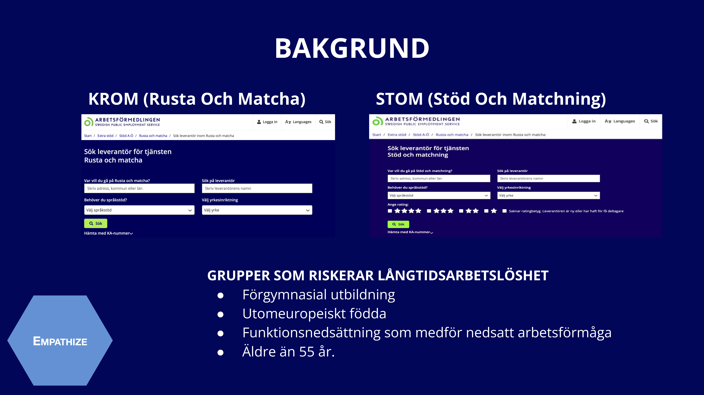

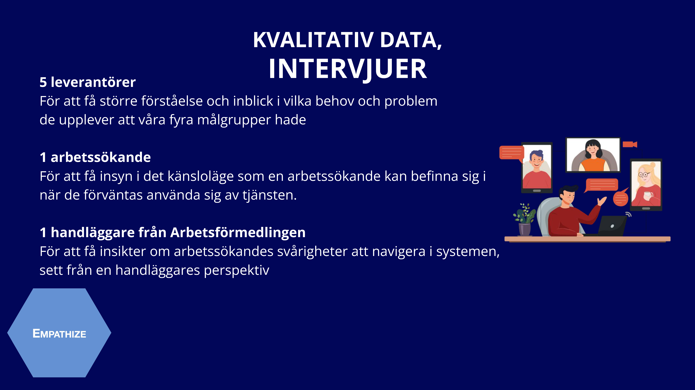

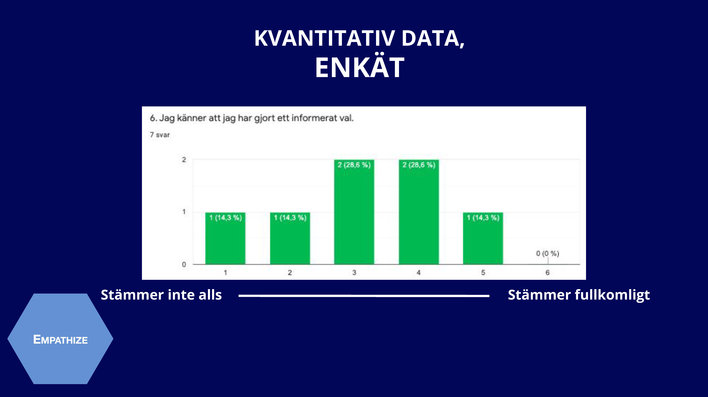
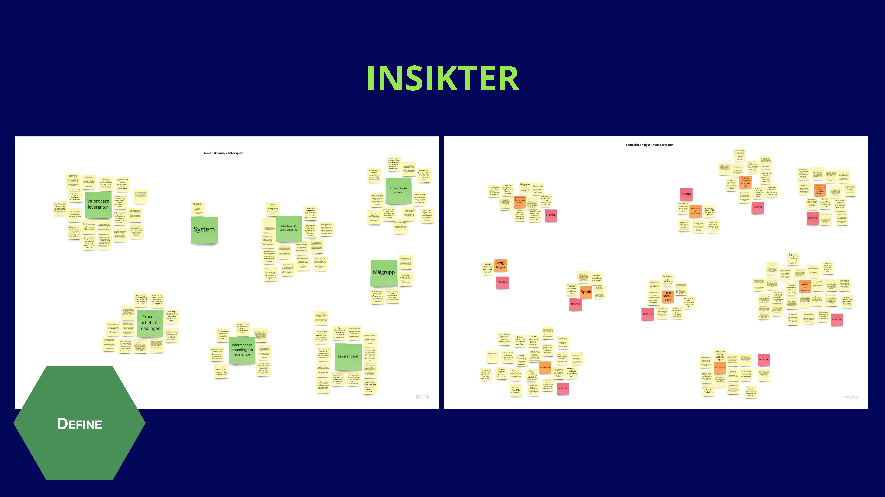

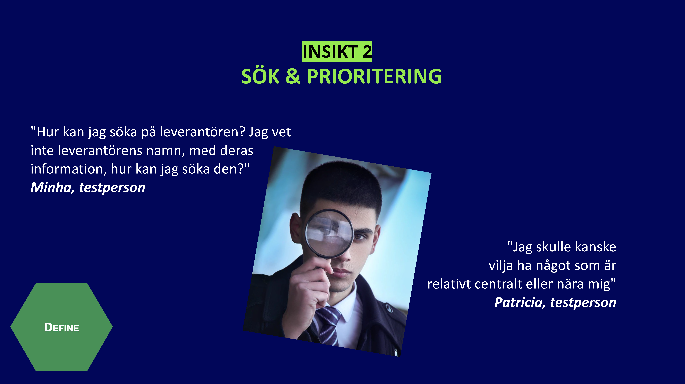

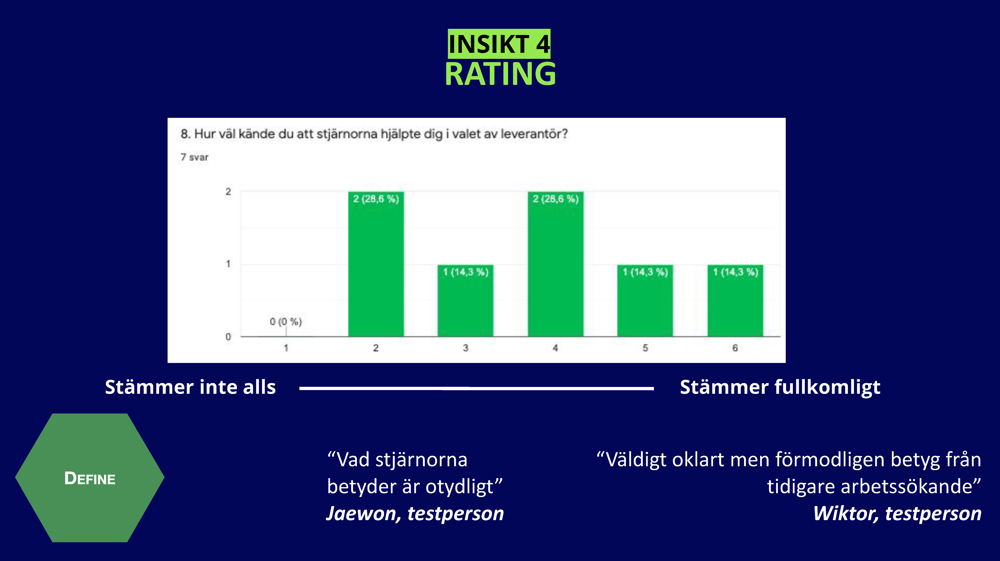
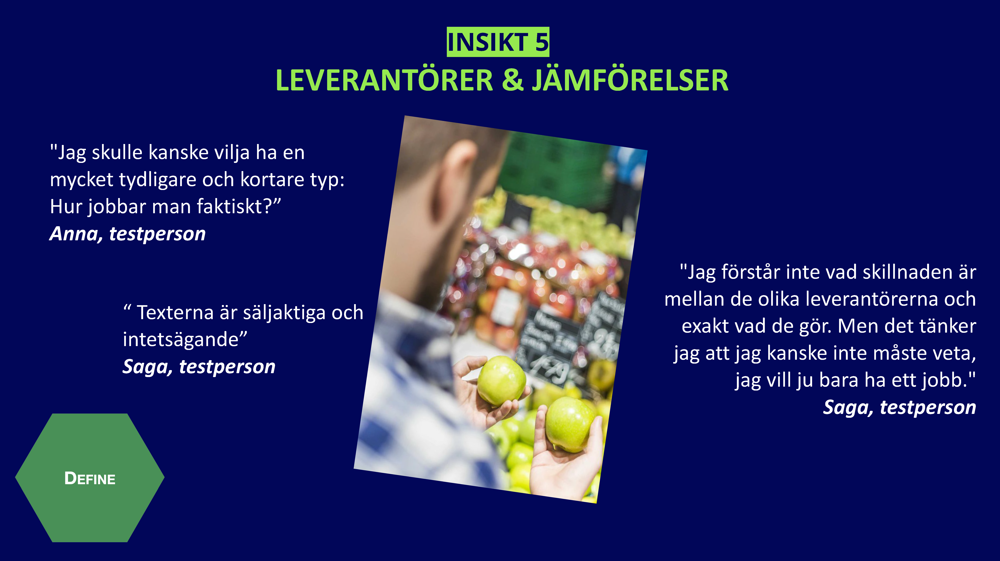

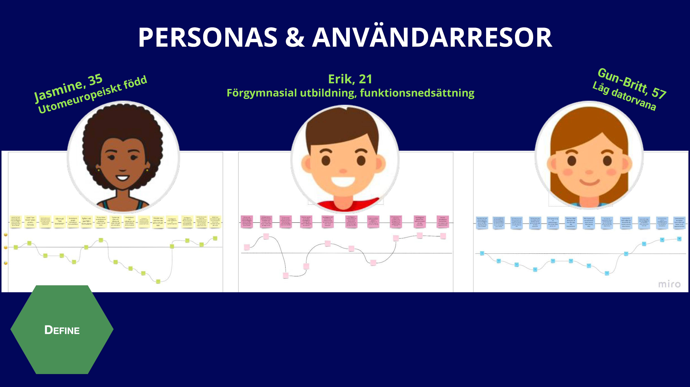
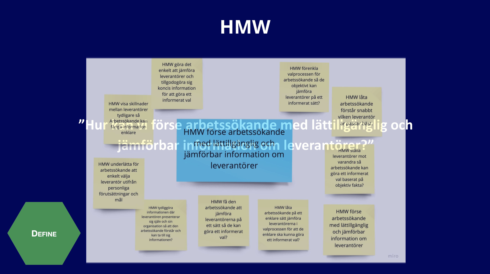

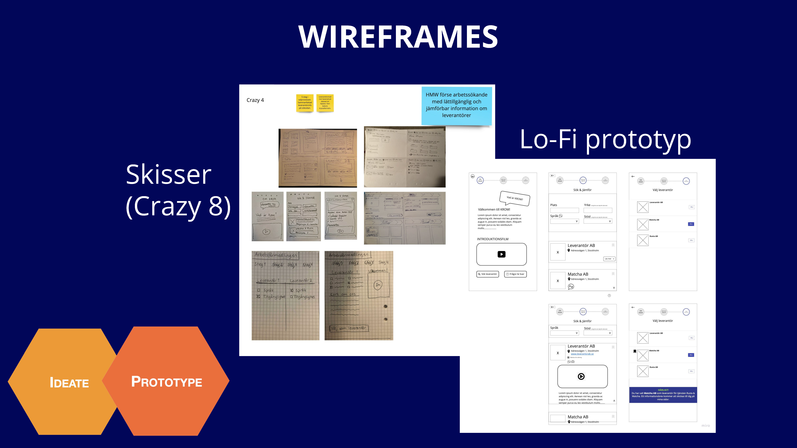

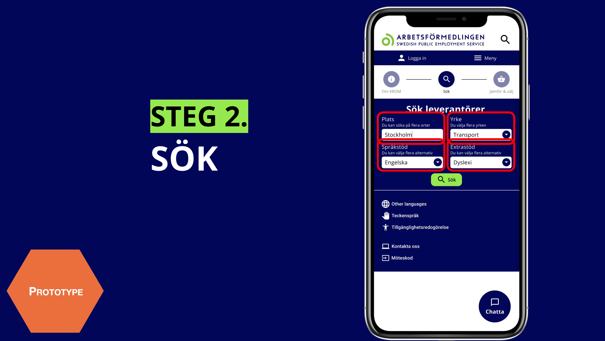
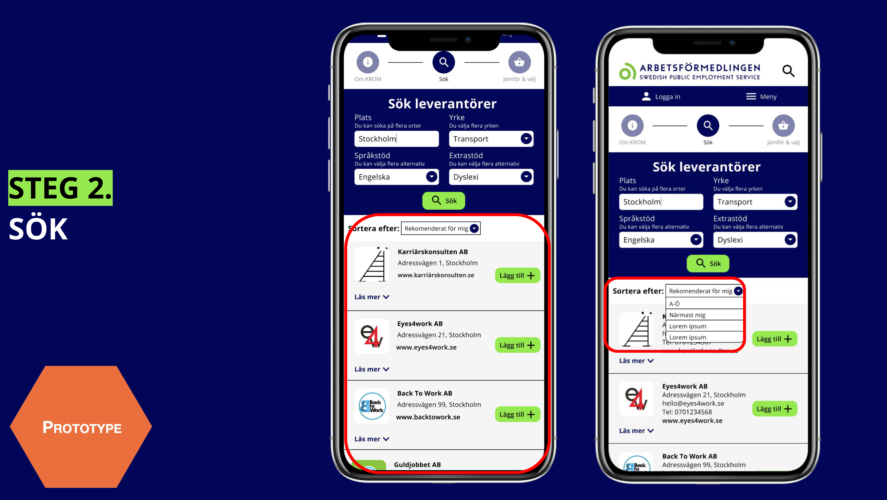

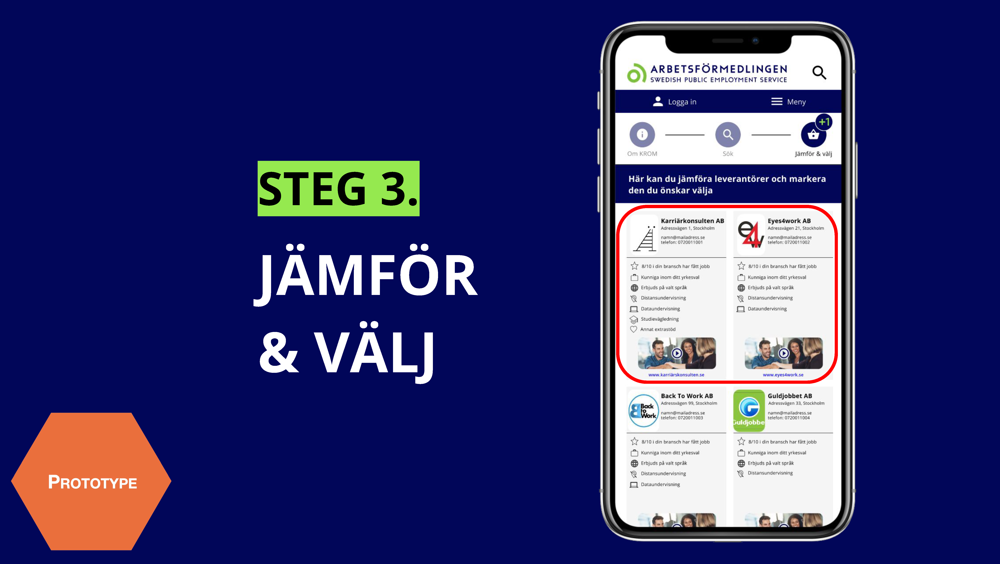
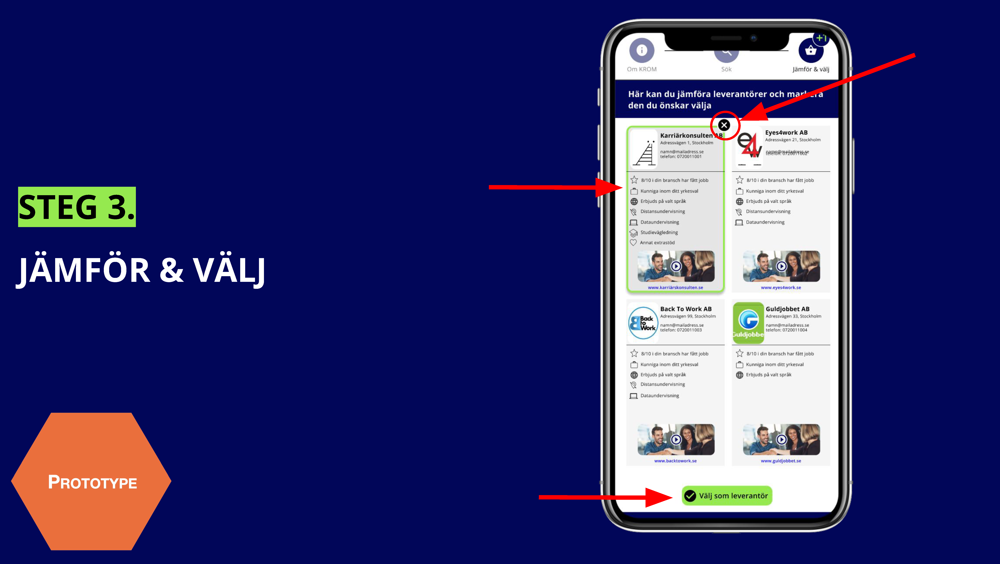
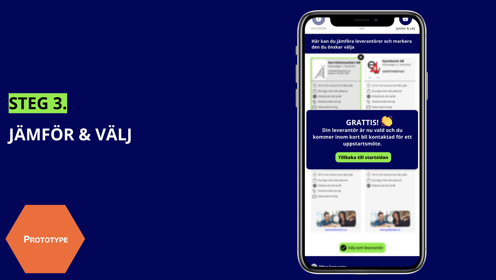
- Course: UX process 2: User-centered design
- Task: To analys and redesign Arbetsförmedlingen's KROM service
- Period: 26 Oct - 13 Dec 2020 (7 weeks)
- Team: Agnes Englund, Andreas Engström, Elin Nelson, Jesper Håkansson, Julia Chae (Nackademin UX 20)
- Methods: Design Thinking method
- Tools: Miro, google forms (Survey), Figma